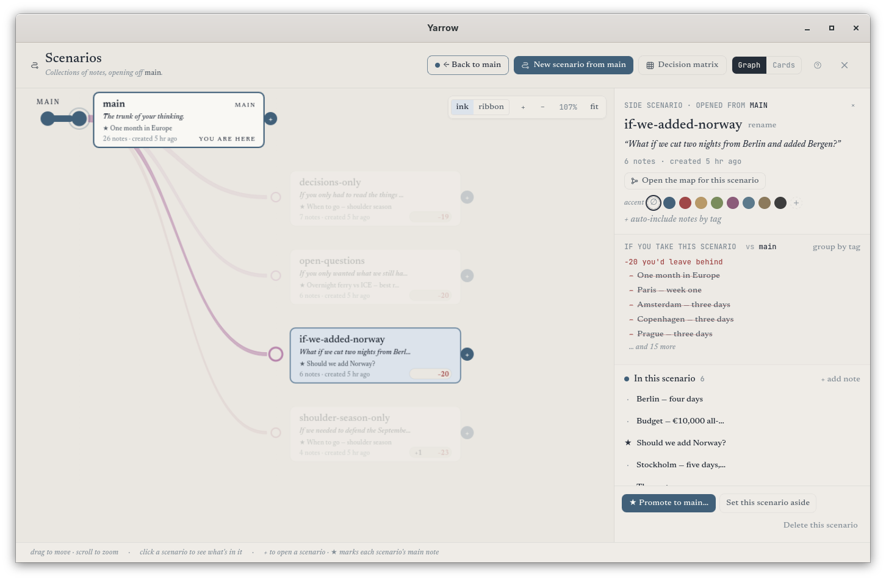

A local-first notebook built around the way thinking actually works. Your notes are plain markdown. Every save is a checkpoint. Every direction you explore stays in an archive, not the trash. 3.1 brings a calmer motion pass, sharper in-editor authoring, and a file-backed glossary you edit in Settings.
Calmer motion, sharper authoring, and a standalone glossary
3.1 sits on the 3.0 engine and adds three things you feel the moment you open it: a unified motion vocabulary that quiets every transition, a new in-editor authoring surface for picking links, transforming selections, and inserting blocks, and a file-backed glossary you author from one place in Settings.
i. A calm motion pass
Animation, finally spoken the same way.
Every transition routes through a single anime.js v4 motion vocabulary: modal entrances, command-palette open, toast slide-in, note-list filter cascade, fork-moment timeline, focus-mode rail collapse, theme-swap ink wash, auto-checkpoint pulse, connection-graph radial spawn. Same easing, same durations, same restraint everywhere. Honours prefers-reduced-motion end-to-end.
anime.js v4 · 9 motions · reduced-motion safeii. The editor, sharper at hand
In-editor authoring, in one place.
Type [[ for an inline wikilink picker with a Create-on-the-fly fallback. Drag over text and a selection toolbar appears with Bold, Italic, Code, wikilink, highlight, and the ?? marker. Hit / at the start of a line and a slash-command panel opens — formatting blocks, linking helpers, app-level actions, and persona-specific commands at the top.
Picker · Toolbar · Slash paneliii. Glossary, decoupled from notes
One file, edited in Settings.
The glossary is now a standalone .yarrow/glossary.json file authored from a new Settings → Glossary pane. Each term + definition is underlined wherever it appears in any note, with the definition surfaced on hover. Tracked in git, so your defined vocabulary travels with the workspace. The frontmatter-flag mechanism from 3.0 is gone — one place to add, one place to edit.
.yarrow/glossary.json · live highlighter
Personas v2, unified
Mode and Persona collapse into a single picker with seven choices — Basic, Default, Writer, Researcher, Developer, Clinician, Cooking. Each persona is a lazy-loaded manifest under src/plugins/<id>/, so adding a new one means adding a manifest, not editing a registry.
First-run wizard
"How do you want Yarrow to feel?" — three tiles: Minimal, Full Yarrow, Tailored. Tailored opens the persona grid; the other two pick implicitly. Settings → Personas matches the same search-driven palette with arrow-key navigation and a pinned Recently used row.
Persona Actions popover
Click the persona pill in the status bar and an Obsidian-style command list pops up, filtered to the active persona. Search box, arrow-key navigation, Enter to pick, Esc to dismiss. Universal "Switch persona…" and "Open command palette…" rows always at the bottom.
Check for updates
Settings → About has a manual Check for updates button that asks GitHub Releases for the latest tag and tells you whether you're current, with a link to the release notes when a newer version is out. No auto-check, no telemetry, no nag bar.
Built for the long haul
For work that takes weeks, not minutes.
Yarrow is at home with theses, dissertations, multi-month research projects, and the slow accumulation of notes that sit underneath every good piece of writing. Branch a draft into three different arguments. Keep the questions you haven't answered. Trace a citation back to the source — and forward to every note that built on it.
Built for thinking
Twelve mechanics that make Yarrow itself.
Plain markdown on disk. Every save is a checkpoint. Every direction is a path. Yarrow is git underneath and there's no git anywhere on the surface.
Scenarios, not branches
Try a different take any time you want. The original waits exactly where it was. Switch between scenarios or fold one into another — nothing is ever lost.
Auto-checkpointing
Every pause becomes a tiny snapshot. The history slider lets you scroll back to any version. No commits, no commit messages — it just works.
The Connections graph
See your notes as a living web — every connection visible, every cluster meaningful. Smooth and responsive even on workspaces with thousands of notes. Connections can be labelled (supports, challenges, came-from, open-question), each with its own colour and stroke.
Wikilinks & backlinks
Type a couple of letters and Yarrow surfaces the right notes — link any two with a click. Backlinks appear automatically on the other side, so the connection is always visible from both ends.
Open questions
Drop a quick "??" anywhere as you write to flag something you're still working out. Yarrow gathers every open question in the side panel so you can come back to them when you're ready.
Sync, optionally
Yarrow runs entirely on your machine. If you want a backup or to keep two computers in step, connect to a Yarrow Connect server — your notes are still yours, but a second copy lives where you choose.
Encryption
Sensitive workspaces can be locked with a passphrase. Encryption happens entirely on your computer, so a synced copy is unreadable to anyone but you.
Command palette
Press ⌘K and type — Yarrow finds notes, paths, kits, settings, anything. The fastest way to get anywhere in the app, without ever taking your hands off the keyboard.
Designed to be accessible
A new Visualizations panel with patterns alongside colour, an alternative table view of the connections graph, a soft reading-guide band that follows your cursor, and screen-reader announcements when you switch scenarios or pin a checkpoint.
Reading-guide band
A soft horizontal band that follows the cursor row, anchoring the reader's eye on the line being typed. Inert if the preference is off; honours reduced-motion.
Tags with meaning
Some tags have shape — sensitive notes, drafts, decisions, follow-ups, evergreens, open questions, archived. Each gets its own visual treatment so you can read your workspace at a glance.
Feels native on every platform
On macOS the sidebar picks up real translucent vibrancy and chrome adopts Apple's system font. On GNOME the layout adopts Adwaita Sans. Yarrow tries to look at home wherever it lands.
2.1 + 2.2 carries forward
The workflows that came before — still here.
Modes & Personas, the engine rewrite, and the design system all sit on top of the surface 2.1 and 2.2 introduced. None of it is on by default — you opt in at the moment you want it.
75 kits · 9 categories
The kit library
Hand-picked starting shapes — journal, research, clinical, work, learning, writing, everyday, decision, spiritual. Each kit is a regular template you can edit or override.
Papers · citations · imports
Research workflow
Drop a citation file from Zotero or BibDesk and Yarrow turns each entry into a paper-card. Type @ and start a name to cite a paper anywhere — the link resolves itself.
Privacy-first · stays on your machine
Clinical surface
SOAP, BIRP, DAP, supervision-prep, safety-plan, treatment-plan. Sensitive notes are quietly redacted from previews and excluded from search. Sensitive content scanning runs entirely on your computer.
Opt-in · off by default
Cooking workflow
Five baking kits, a recipe URL clipper that picks up structured recipes, inline timers, a cook-mode reading view (big text, screen stays awake), and a smart shopping-list scanner.
In situ
A look at the desk.
The main view, the Connections graph, and Scenarios — Yarrow on a real workspace.
EditorWorkshop
ConnectionsWorkshop

ScenariosVellum
Principles
Six things we will not change.
Constraints carry the product as much as features do.
i.
Your notes are just files.
Each note is a plain text file on your disk in a folder you pick. You can open them in any other app, back them up, copy them anywhere. Yarrow doesn't lock anything up.
ii.
Local-first.
Yarrow runs entirely on your machine. No account, no sign-up, no internet required. Sync is optional and you choose your server.
iii.
Nothing is ever lost.
Every save is a checkpoint. Every direction is a path. Trash is undeleteable for 30 days, then garbage-collected.
iv.
Version history that hides itself.
Yarrow remembers every version of every note, but you'll never see a commit, a branch, or a merge marker. Just paths, checkpoints, and the option to scroll back to anything.
v.
No telemetry.
Zero phone-home. Zero analytics. Zero pixels. You'll never wonder what's leaking.
vi.
Free, MIT.
Source code lives on GitHub. Read it, fork it, ship your own. The desktop app and the docs site both ship under the MIT licence.
Get Yarrow 3.1
Free to read, free to fork.
Yarrow 3.1 ships as a small, native app on every platform — under 25 MB, with no extra installers or sign-up. Source code is available on GitHub under the MIT licence.